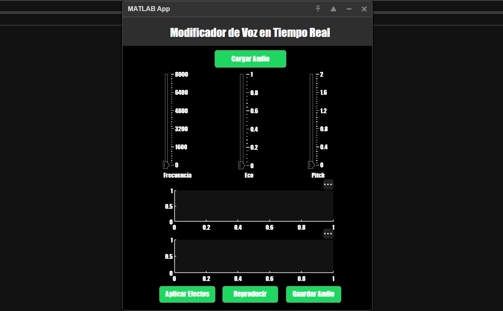
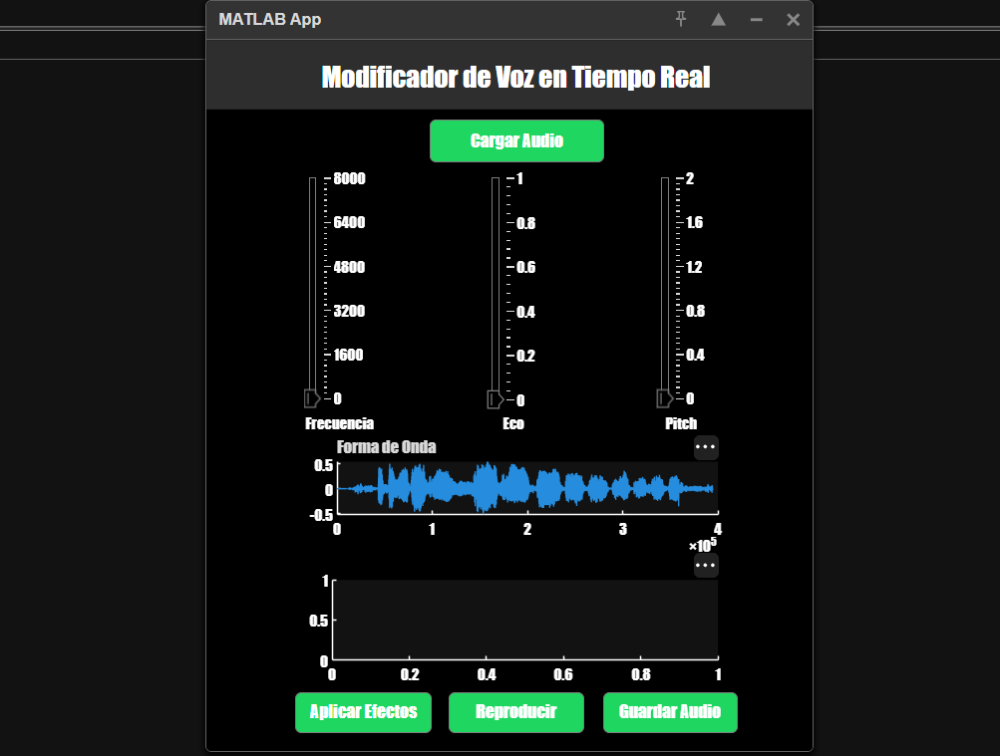
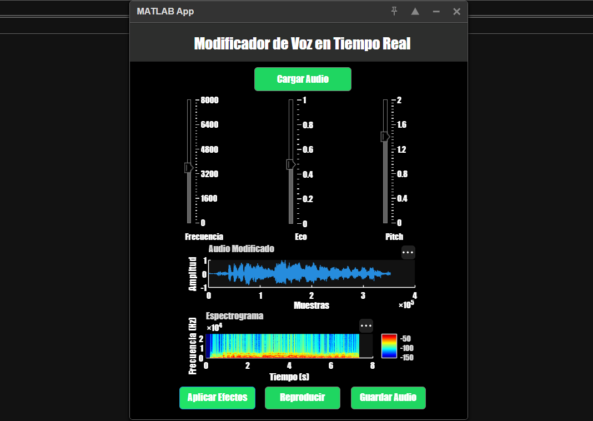
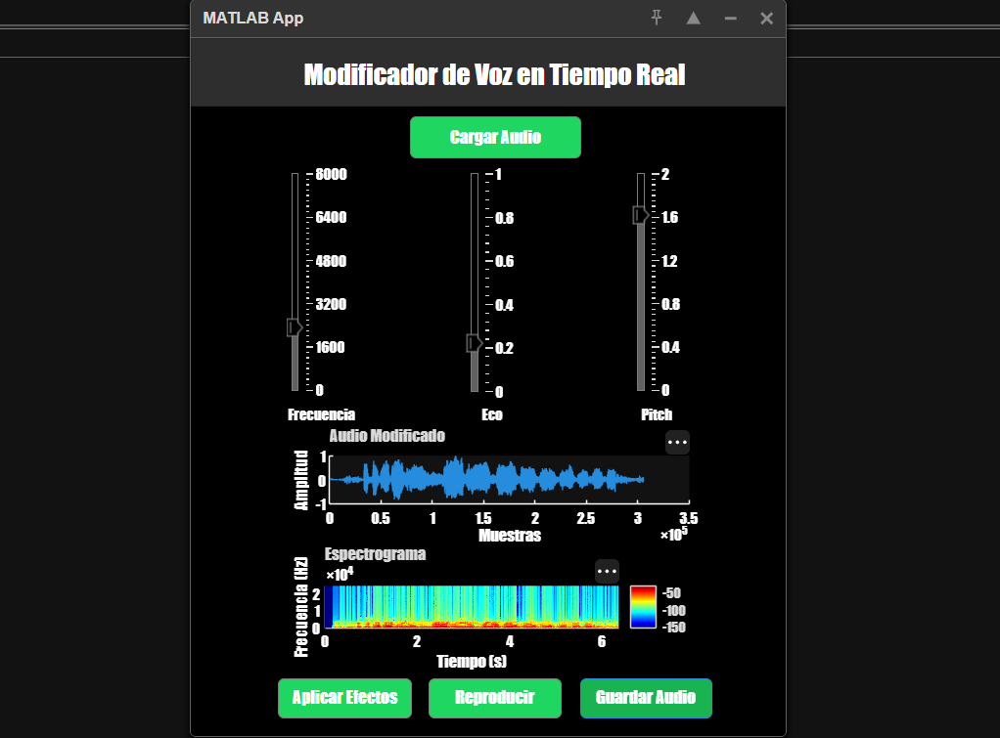

MODIFICADOR DE VOZ
Aplicación interactiva que permite modificar señales de audio mediante la aplicación de efectos como filtro pasa bajos, eco e interpolación lineal para cambio de pitch (tono). Permite visualizar la señal modificada en el dominio del tiempo y en el dominio de la frecuencia mediante un espectrograma.
Objetivos del proyecto



